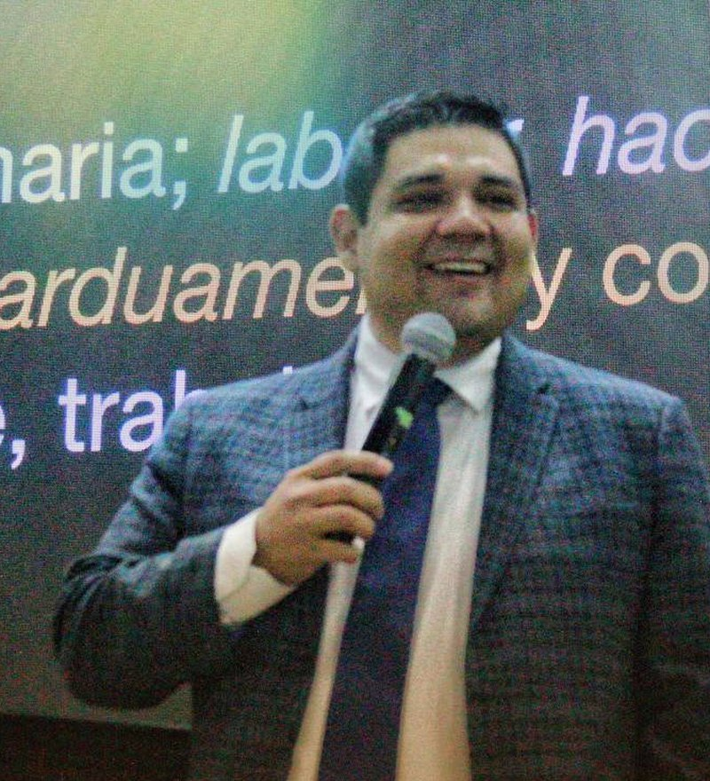

El Anciano Estuardo Soto enfatiza la importancia de buscar una sanidad integral que comience en el interior, en el espíritu y el alma, para que sus efectos alcancen el cuerpo y la vida diaria.
Lo mejor de la prédica, palabra por palabra
Estos fragmentos son transcripción literal de lo que se dijo; la puntuación se añadió para leerlos mejor.
En ese tiempo era algo en el cuerpo, pero ahora puede ser en el alma. Entonces es importante que el Señor pueda sanarnos hoy. ¿De qué nos tendría que sanar el Señor? En el espíritu podría ser iniquidad o maldad, porque tal vez no sabemos si hay iniquidad que traemos de nuestros ancestros.
Pero en el alma, donde están las emociones, hay un trauma que tal vez a alguien le pasó cuando tenía 5 años y ahora tiene 65, y todavía le afecta. Nunca sanó su alma. En el alma están las emociones.
En resumen
- 01
La prioridad de lo interno: Dios requiere limpieza primero por dentro (Génesis 6:14; Éxodo 25:10-11; Mateo 23:25-26).
- 02
El pecado y la sanidad del alma: el pecado enferma el alma (Salmo 41:4); Dios perdona iniquidades y sana enfermedades (Salmo 103:1-5).
- 03
El poder de la palabra: la lengua puede sanar o destruir (Proverbios 12:18).
- 04
Qué evitar decir: expresiones de orgullo o escepticismo, como «mi poder y mi fuerza me han producido esta riqueza» (Deuteronomio 8:17-18).
- 05
Conclusión: llamado al altar para buscar la sanidad en espíritu, alma y cuerpo.
La prioridad de lo interno
A través de ejemplos bíblicos, como la construcción del arca de Noé y el arca del pacto, el predicador explica que Dios requiere una limpieza primero por dentro para que lo exterior también sea purificado. Menciona Génesis 6:14, Éxodo 25:10-11, Levítico 14:41 y Mateo 23:25-26.
El pecado y la sanidad del alma
Diagnostica que el pecado es lo que enferma el alma, con el Salmo 41:4. Con el Salmo 103:1-5 resalta que Dios es quien perdona las iniquidades y sana las enfermedades, y enfatiza que no puede haber liberación sin sanidad ni perdón previos.
Entonces, ya con este ángulo de la palabra, uno dice: «Voy a tener cuidado con lo que digo». Porque no es solo de tener una lengua ametralladora, sino que tenemos que tener una lengua sanadora. Mire: «la lengua sana es árbol de vida; la lengua perversa rompe el corazón».
El poder de la palabra
Dedica gran parte del mensaje a explicar cómo las palabras actúan como herramientas de sanidad o de destrucción. Advierte contra la lengua perversa que rompe el corazón e insta a tener una palabra sana que edifique y bendiga al prójimo (Tito 2:8; Proverbios 12:18; Proverbios 15:26).
Porque no es la tierra, es el Dios de la tierra. Es el Dios que te bendice. No es el lugar; es el dueño de todo el lugar, de toda la tierra y su plenitud, el que te va a bendecir. Mire, ese es el resumen. Solo vimos palabra sana, sana doctrina, sana conciencia, sana iniciativa, sano conocimiento, criterio sano, sano discernimiento, sano consejo.
El Señor quiere que tengamos una sanidad en nuestra alma, pero para tener esa herramienta de irnos sanando, tenemos que tener esas cosas. Hay más, pero por lo menos esa palabra sana que pueda bendecir mi vida y la de mi hermano.
Qué evitar decir
Enseña, con varios pasajes, a no caer en expresiones de orgullo o escepticismo, como «mi poder y mi fuerza me han producido esta riqueza» (Deuteronomio 8:17-18), «pagaré mal por mal» (Proverbios 20:22) o «soy joven» ante los mandatos de Dios (Jeremías 1:7).
Versículos citados
- Génesis 6:14 Noé debía calafatear el arca por dentro y por fuera: la sanidad debe ser integral.
- Éxodo 25:10-11 El arca del pacto revestida de oro puro por dentro y por fuera; lo de adentro es la prioridad.
- Levítico 14:41 La casa con lepra: se raspaba por dentro.
- Mateo 23:25-26 Limpiar primero lo de adentro del vaso.
- Salmo 41:4 «Sana mi alma, porque contra ti he pecado».
- Salmo 103:1-5 Dios perdona iniquidades y sana enfermedades.
- Tito 2:8 Palabra sana e irreprochable.
- Proverbios 12:18 La lengua de los sabios es medicina.
- Proverbios 15:26 El Señor se deleita en las palabras agradables.
- Deuteronomio 8:17-18 No decir que la riqueza se produjo por el propio poder.
- Deuteronomio 9:4 No decir que Dios dio la tierra por la justicia propia.
- Proverbios 3:28 No decir «vuelve mañana» si se puede ayudar hoy.
- Proverbios 20:22 No decir «yo pagaré mal por mal».
- Eclesiastés 7:10 No preguntar por qué los días pasados fueron mejores.
- Hageo 2:9 La gloria postrera de la casa será mayor que la primera.
- Jeremías 1:7 No decir «soy joven»: Dios pondrá su palabra en la boca.
- Salmo 119:66 Pedir a Dios criterio sano y conocimiento.
- Hechos 3:16 Mencionado en relación con la perfecta sanidad.
Para pensar esta semana
Preguntas para pensar a solas o conversar en familia, a partir de lo que se enseñó.
- ¿Hay algún trauma o herida del pasado que todavía te afecta y que nunca le has entregado al Señor para que sane tu alma?
- Si hablamos de lo que tenemos en el corazón, ¿qué palabras suelen salir de tu boca cuando estás molesto, y cuál sería una palabra sanadora?
- ¿A quién necesitas dejar de «cobrarle» para dejar que Dios ponga las cosas en su lugar en su tiempo?
Cierre de la reunión
El mensaje concluye con un llamado al altar para buscar la sanidad perfecta de Dios en espíritu, alma y cuerpo, y termina con un tiempo de oración y adoración.

3 enseñanzas publicadas en este sitio.
Ver todas sus enseñanzas →Este artículo resume lo expuesto en la enseñanza; no sustituye escucharla completa en el video de arriba.
¿Quieres escucharlo en persona? Conoce nuestros horarios de culto y cómo visitar la Iglesia Cristiana Ebenezer Antigua en Jocotenango. También puedes seguir los cultos en vivo.
Más enseñanzas
 IdentidadUn nombre nuevoPastora Débora de GarcíaLa Pastora Débora de García expone el tema «Un nombre nuevo», a partir de la promesa de Apocalipsis 2:17 sobre la piedrecita blanca y el nombre nuevo…
IdentidadUn nombre nuevoPastora Débora de GarcíaLa Pastora Débora de García expone el tema «Un nombre nuevo», a partir de la promesa de Apocalipsis 2:17 sobre la piedrecita blanca y el nombre nuevo… HonraEl ReconocimientoPastora Débora de GarcíaLa Pastora Débora de García explica la importancia bíblica de recibir y otorgar honra, y advierte sobre el equilibrio necesario para no caer en la…
HonraEl ReconocimientoPastora Débora de GarcíaLa Pastora Débora de García explica la importancia bíblica de recibir y otorgar honra, y advierte sobre el equilibrio necesario para no caer en la… SantidadLa Santidad IIProfeta Hugo GarcíaEl Profeta Hugo García continúa el tema de la santidad: el camino de santidad, la mente de Cristo y el llamado a servir a Dios con alegría…
SantidadLa Santidad IIProfeta Hugo GarcíaEl Profeta Hugo García continúa el tema de la santidad: el camino de santidad, la mente de Cristo y el llamado a servir a Dios con alegría…